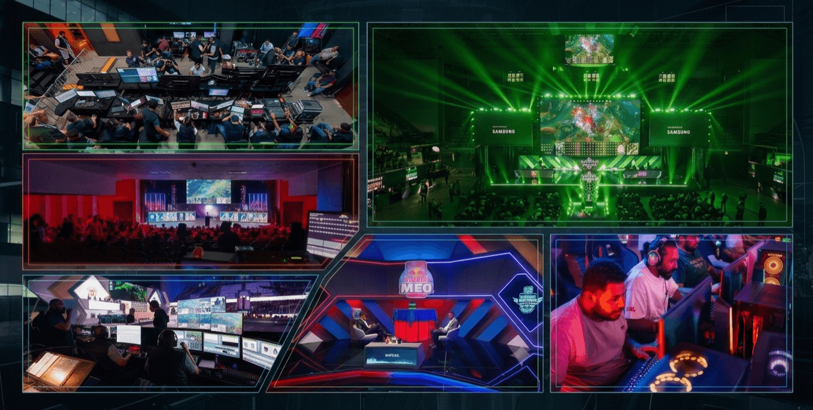
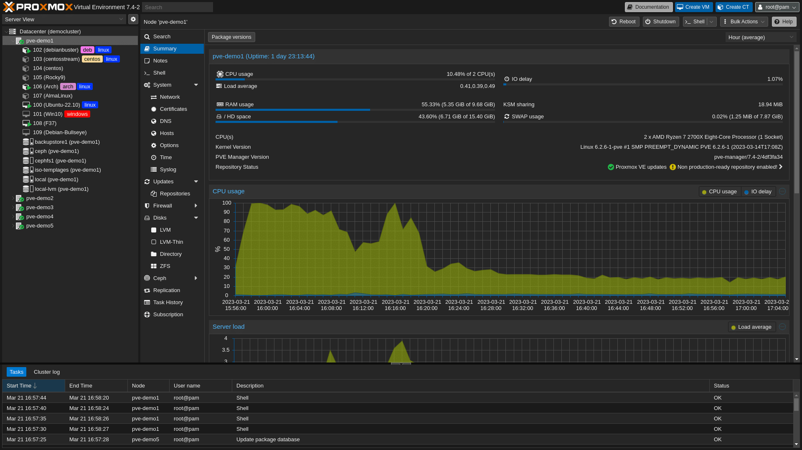
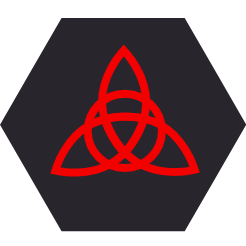
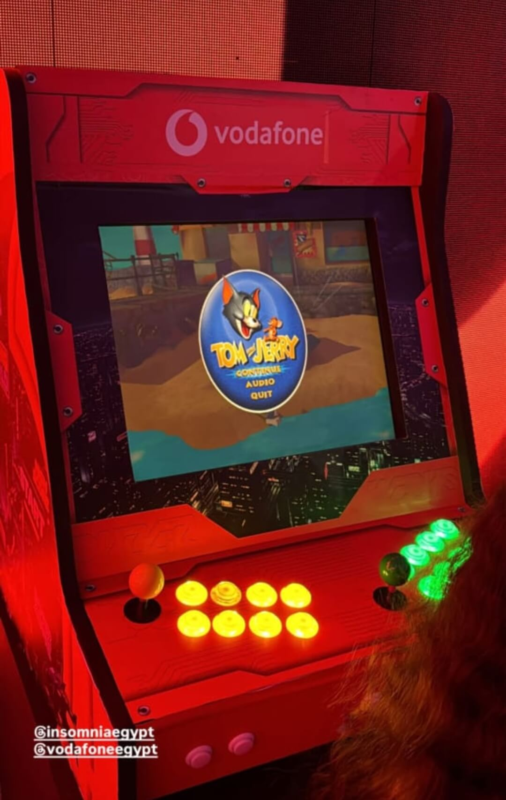

Projects
Esports Events
I've had the opportunity to manage network and internet infrastructure for multiple large-scale esports and gaming events, including Esports Summit (ESS), Red Bull Login, IAC Final 2022, and others.
Across these events, I was typically responsible for:
- Designing and deploying LAN topology connecting gaming PCs, consoles, and production systems
- Configuring VLANs to segment and secure player, production, and public networks
- Managing firewalls, bandwidth allocation, and load balancing to ensure stable and secure connectivity
- Setting up and optimizing Wi-Fi access points for full venue coverage
- Monitoring network performance in real time to maintain low latency during matches

Proxmox Home Lab
Having a place to test whatever comes to mind is genuinely useful, so I repurposed an old PC and installed Proxmox VE on it as a self-hosting playground. It lets me spin up virtual machines or LXC containers on demand, and TurnKey Linux offers a solid library of pre-configured container templates that make deploying new services fast rather than starting from a blank OS every time.

Self-Hosted Password Manager (Bitwarden)
Bitwarden is a strong open-source password manager that supports 2FA and can run entirely offline if needed. It also supports organizations, so credentials — including 2FA-protected ones — can be shared securely between employees rather than passed around insecurely.
I'd never used a password manager before this, mainly because I didn't want to trust a large third-party company with my credentials regardless of their privacy claims. Once I realized Bitwarden could be self-hosted, keeping full control of the data, I gave it a try — and it's been part of my setup since.
Virtualized Firewall (pfSense on Proxmox)
If you don't have a dedicated hardware firewall, pfSense can be run as a virtual machine instead, with network interface cards virtualized alongside it. I also added DNS-based ad-blocking within the firewall layer, filtering ads by blocking known ad domains and IP ranges at the network level rather than relying on browser extensions.
 Internet Quota Monitoring Script
Internet Quota Monitoring Script
Manually checking quota usage across multiple internet lines every day gets tedious fast, so I automated it. This Python script logs into the te.eg portal, checks remaining data and days left until renewal for each line, and can be scheduled via task scheduler to run automatically — sending a daily WhatsApp report so I never have to check manually.
Check it out on GitHub.

LanCache Server DeploymentAt esports events — or anywhere with many computers needing to download the same large files or game updates — available bandwidth often can't keep up with demand. LanCache solves this efficiently:
- Set it as the primary DNS server (via DHCP)
- It intercepts HTTP download requests and caches the content locally
- Subsequent computers requesting the same files are served locally instead of re-downloading from the internet
This approach saved terabytes of bandwidth across 100+ computers during live events.
CS2 Game Server
Deployed a CS2 game server using Docker inside an LXC container with persistent storage mounting, built for Esports Summit tournament infrastructure. Achieved ~7ms latency across Cairo during testing; planned site-to-site VPN access for the event before the tournament was cancelled.
Linux Arcade Machine
I built the electronics and internal systems for a fully functional arcade machine, integrating the wiring, controls, and display into a cabinet. The system runs on an Intel i5 4th generation CPU with integrated graphics, handling a curated library of retro games spanning NES, SNES, PS1, PS2, and Nintendo DS emulation. For the software, I used Batocera, a Linux-based retro-gaming distribution, configuring the system for proper controller mapping and a smooth boot-to-play experience.
